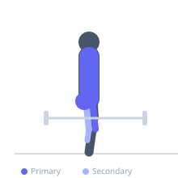
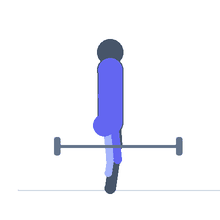

Exercise guide / Yoke Carry
Yoke Carry
The yoke carry involves hoisting a heavy steel frame (the yoke) across the upper back and trapezius, then walking a prescribed distance as quickly as possible under that extreme load. It is a foundational strongman event and an exceptional developer of total-body strength, postural endurance, and anaerobic conditioning. The yoke imposes unique loading because the implement is wider than a barbell and the load is not secured, requiring constant isometric stabilisation from the trapezius, erector spinae, and core throughout the walk.
Primary muscles
trapezius upper
erector spinae
vastus lateralis
gluteus maximus
Secondary muscles
biceps femoris long head
gastrocnemius medial
gluteus medius
Stabilizers
transverse abdominis
internal oblique
external oblique
Equipment


Starting position
- Set the yoke crossbar to upper-back height (slightly below the bar position for a low-bar squat). Walk under the yoke, position the bar across the upper traps, and brace the core hard before unracking.
Setup
- Adjust yoke uprights to the correct height for your build. Load weight plates evenly on both sides. Walk the course before loading to identify the turnaround point.
Steps
- Step 1: Position yourself under the yoke crossbar with the bar resting on the upper traps. Take a wide, stable stance.
- Step 2: Brace the core maximally, take a full breath, and stand the yoke up by extending the hips and knees.
- Step 3: Begin walking with short, quick steps. Keep the torso upright — do not lean forward.
- Step 4: Maintain a tight grip on the yoke uprights throughout the walk for stability control.
- Step 5: At the turnaround or finish, slow the momentum carefully and lower the yoke to the ground by hinging at the hips and bending the knees.
Coaching cues
- Short, fast feet — not long lunging strides
- Drive the head up and back into the bar
- Squeeze everything — abs, glutes, traps — before you pick it up
Breathing
- Take a full breath and brace the core before unracking. During the walk, take short breaths between steps without fully releasing the core brace.
Range of motion
- Walk distance is event-specific (typically 10–25 metres). Steps should be short and fast — approximately 50–60% of normal walking stride length.
Tempo
- Event training: maximum speed for set distance. Strength training: 10–20 metres at 60–80% of competition weight × 3–5 sets. Rest 3–5 minutes between sets.
Common mistakes
- Taking long strides, which makes the yoke swing and sway laterally
- Not bracing the core before the initial stand, causing the spine to load in flexion
- Looking at the ground — keep the gaze forward to maintain spinal alignment
Safety
- Have collars on the weight plates — a falling plate at speed is a serious hazard
- Use a spotter or judge for the first attempts at heavy loads
- Do not attempt a yoke carry without a solid foundation in barbell squats and loaded carries
Training
- strength: 1–1 reps
- endurance: 1–3 reps
- strength: 3–5 sets
- Rest: {'strength': 240, 'endurance': 180}